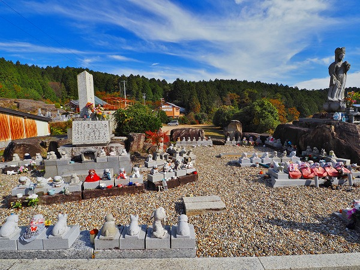

愛知県豊田市の
妙楽寺というお寺に
墓の墓がある、という噂は随分前から聞いていた。
一体どんな所なのか、行ってみることにした。
場所は豊田市の山間部、松平家発祥の地である松平郷のすぐ近くだ。
実際、戦国時代にはこの寺は松平城の離れ古城であったという。
お寺の本堂からさらに坂道を上っていくと広い墓地に出る。
墓地は周囲を斜面に囲まれており、その斜面に
無数の「無縁墓」が並んでいるのだ。
ちなみにこの墓地のすぐ近くには
お寺が運営しているモトクロス場があり、この日もモトクロスバイク愛好家がハードなコースを楽しんでいた。
お寺のモトクロス場って凄く珍しいと思うのですが…どうなんでしょう？
さて。
お墓に話を戻す。
現役の墓地ががらんとしているのに比べて、役目を終えた墓石の方が圧倒的に多い。
約40年前から古い墓石を受け入れているそうだ。
これらの墓石の大半は跡継ぎがいなくなり、面倒を見られなくなったものだ。
少子高齢化のリアルな姿をこのような光景からも実感できる。

墓地の一画にはペット霊園も。
人間の墓が棄てられ、ペットの墓が建立される。何とも複雑な時代だ。
隙間なく並んだ無縁墓。
大半は昭和の頃に作られた墓石のようだ。
墓地の裏は丘になっており、その上には何やら大きな観音像が建っているようだ。
後で見に行こう。
で、墓の墓である。
昭和の墓だけでなく古い墓石も多い。
お地蔵さんに混ざってどなたかの石像。誰？
墓石の間からにゅっと顔を出す方々。
リアルな造形だけに結構ビビりました。

圧倒的な墓石群。
一本一本に様々な思いが込められていたのだろうが、残念ながらその思いは永遠には続かなかった。
代々祀られる事を前提とされた墓石なのに。
建立当時は誰もこんな事になるとは考えも及ばなかったのだろう。
この光景を見たらZ世代の皆さんは「最初っからこんなもの作らなきゃいいじゃん」ってお思いだろう。
でもね。
この墓を作った時点では、君たちの親御さんや爺ちゃん婆ちゃんは君たちが結婚して子を儲けてその子も子を儲けて…と信じて疑わなかったのだよ。
後世に苦労をかけたくない、という一心でお墓を建立したのだよ。子や孫への心からの親切心として。
ここにある風景は昭和から平成、令和にかけての世代ギャップを象徴的に表した光景でもあるのだ。
…以上、老害からの独り言でございます。
さて。
先程から凄く気になっているのだが、墓の墓の後方に
大量のコンクリ像が林立しているぞ…。
あまりにも数が多いので素通りは無理！
50体はあろうか。
そのほとんどは観音像だ。
中でも一番大きな観音像は4m程もある。
みな表情が似ている。同じ作者のものなのだろう。
正体を確かめるべく近くで見てみよう。
「墓の墓」の端っこをまわり込んで上に向かう。
墓石の台座を利用して基壇を造っているのだ。
墓の墓を造るためにストックされている台座。

丘の上に上る。
壮観な眺め也。
上の方には見慣れぬ石像があった。
御嶽信仰関連の神霊像だろうか。
こちらには見慣れぬ観音像の大群。
てなわけでコンクリ像の背後に到着。
チョット神格不明の像もあった。天女なのか？あるいはスフィンクス？

大きな観音像に肉薄。
一瞬尾張のコンクリ像番長である
浅野祥雲師の名が浮かぶが、明らかに作風が異なる。
まだ見ぬ愛知のコンクリ造形師の存在が予感される。
垂れ目で下膨れの愛嬌のある観音像。
これだけの数を製作しているからにはそれなりの人物なのだろう。
前列にも観音像がズラリ。
墓の墓が居並ぶ光景の中にあってひたすら異彩を放ち続けている存在だった。
最後に丘の上の観音様を目指そう。
丘の上には夥しい数の地蔵が並んでいた。
で、その頂点には
水子観音像が建っていた。
観音像の足元には数多くの水子が救いを求めていた。
水子地蔵越しに見る墓の墓。
ビックリするほどの無縁墓の群れだった。

帰りにトイレを借りた際に偶々見かけた水子観音のマッチのラベル。
東加茂郡下山村時代のもの。
下山村が豊田市に編入されたのは２００５年、それ以前の物という事になろう、
水子万体観音と記されているが、この時点では足元の地蔵はまだない。
というか1万体の観音像を並べる予定だったのだろうか。
そもそも何で水子地蔵じゃなくて水子観音なんだろう？
謎が謎を呼ぶマッチラベルだった。
…と、ここまでは単に墓の墓を訪ねたハナシなのだが、この後この
コンクリ像に関して話が大いに展開していくのであった。
（つづく）